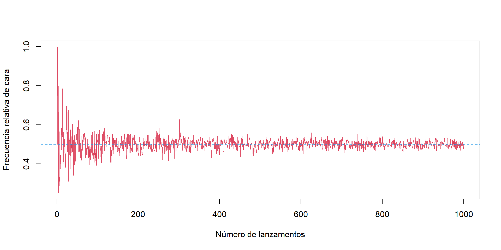

Tema 2. Fundamentos de probabilidade
Estatística. Grao en Intelixencia Artificial
Tema 2. Fundamentos de probabilidade
Ao rematar este tema deberías:

Introdución
Vinculada inicialmente aos xogos de azar, a probabilidade aparece sempre que queremos saber se algo vai ocorrer ou non:
- Cal é a probabilidade de que saia un seis nunha tirada de dado?
- Cal é a probabilidade de acertar os seis números da lotaría primitiva?
- Acabo de mercar un móbil, cal é a probabilidade de que se estrague durante o período de garantía?
- Se o móbil non fallou durante o período de garantía, cal é a probabilidade de que se estrague o próximo ano?
Conceptos básicos
Cando dun experimento podemos saber dalgún xeito cal vai ser o seu resultado
antes de que se realice, dicimos que o experimento é determinístico.Queremos estudar experimentos que non son determinísticos, pero non todos.
Por exemplo, non poderemos estudar un experimento do que, por non saber, nin sequera sabemos por anticipado cales son os resultados posibles.
Non realizaremos tarefas de adiviñación.Por iso definimos un experimento aleatorio como aquel que cumpre certas condicións que permiten un estudo rigoroso:
- Todos os seus posibles resultados son coñecidos de antemán.
- O resultado particular de cada realización do experimento é imprevisible.
- O experimento pódese repetir indefinidamente en condicións idénticas.
Conceptos básicos
Espazo muestral
Conxunto formado por todos os resultados posibles do experimento aleatorio. Denotáse por \(\Omega\).
Suceso elemental
Cada un dos posibles resultados \(\omega\in\Omega\) do experimento aleatorio.
Suceso
Calquera subconxunto do espazo mostral.
Sucesos e operacións
Suceso seguro: o que sempre ocorre, o espazo mostral, \(\Omega\).
Suceso imposible: o que nunca ocorre, o conxunto baleiro, \(\emptyset\).
Unión: ocorre \(A \cup B\) se ocorre polo menos un dos sucesos \(A\) ou \(B\).
Intersección: ocorre \(A \cap B\) se ocorren os dous sucesos \(A\) e \(B\) á vez.
Complementario: ocorre \(A^c\) se e só se non ocorre \(A\).
Diferenza de sucesos: ocorre \(A \setminus B\) se ocorre \(A\), pero non \(B\).
Entón, \(A \setminus B = A \cap B^c\).Sucesos incompatibles: \(A\) e \(B\) son incompatibles se non poden ocorrer á vez, é dicir, \(A \cap B = \emptyset\).
Suceso contido noutro: diremos que \(A\) está contido en \(B\), e denótase \(A \subset B\), se sempre que ocorre \(A\) tamén ocorre \(B\).
Probabilidade: Definición clásica ou de Laplace
Cando, sendo o espazo mostral \(\Omega\) finito, todos os sucesos elementais teñen a mesma probabilidade, diremos que son equiprobables e poderemos empregar a regra de Laplace:
\[ P(A)=\frac{\text{Número de casos favorables}}{\text{Número de casos posibles}} \]
“A Teoría da Probabilidade non é, no fondo, máis ca sentido común reducido a cálculo.” (Laplace, Théorie Analytique des Probabilités)
Probabilidade: Definición frecuentista
Cando se emprega o termo probabilidade de xeito coloquial, exprésase o grao de certeza ou incerteza no resultado dun experimento antes da súa realización. Para cuantificala apoiámonos na experiencia empírica que xa poidamos ter dese experimento.
A frecuencia relativa dun suceso \(A\) tras \(n\) repeticións defínese como \[ f_n(A)=\frac{\text{Número de veces que ocorreu } A \text{ en } n \text{ repeticións}}{n}. \]
Intuitivamente, definimos a probabilidade de ocorrencia do suceso \(A\) como o límite da frecuencia relativa cando o número de repeticións medra indefinidamente: \[ P(A)=\lim_{n\to\infty} f_n(A). \]
“Hai outro camiño dispoñible para acadar o resultado desexado. O que non se pode atopar a priori pódese obter a posteriori, é dicir, mediante a observación repetida dos resultados de probas semellantes.” (Bernoulli)
Probabilidade: Definición frecuentista
Simulación de lanzamentos de moeda: Frecuencia relativa de cara en función do número de lanzamentos
nlanzamentos <- 1:1000
fn_cara <- numeric()
for (i in nlanzamentos) {
moedas <- sample(c("C", "X"), nlanzamentos[i], replace = TRUE)
fn_cara[i] <- sum(moedas == "C")/i
}
plot(nlanzamentos, fn_cara, type = "l", col = 2, xlab = "Número de lanzamentos",
ylab = "Frecuencia relativa de cara")
abline(h = 0.5, col = 4, lty = 2)Probabilidade: Definición axiomática de Kolmogorov
Unha probabilidade é unha regra que asigna a cada suceso \(A\) un número que cumpre as seguintes propiedades:
\(P(A)\geq 0, \forall A\in \mathcal{P}(\Omega).\)
\(P(\Omega)=1.\)
Se \(A_1, A_2, \ldots\) é unha sucesión numerable de sucesos incompatibles dous a dous, entón \[ P\!\left(\bigcup_{i\geq 1} A_i\right)=\sum_{i\geq 1} P(A_i). \]
Probabilidade condicionada
Dados dous sucesos \(A\) e \(B\) tal que \(P(B)\neq 0\), definimos a probabilidade do suceso \(A\) condicionada ao suceso \(B\) como:
\[ P(A\mid B)=\frac{P(A \cap B)}{P(B)}. \]
Dedúcese inmediatamente que:
\[ P(A \cap B)=P(A)\cdot P(B\mid A)=P(B)\cdot P(A\mid B). \]
Independencia de sucesos
Dous sucesos \(A\) e \(B\) son independentes se:
\[ P(A \cap B)=P(A)\cdot P(B). \]
- Se \(P(B)>0\), \(A\) e \(B\) son independentes se e só se \(P(A\mid B)=P(A)\), é dicir, o coñecemento de que ocorre \(B\) non modifica a probabilidade de ocurrencia de \(A\).
- Se \(P(A)>0\), \(A\) e \(B\) son independentes se e só se \(P(B\mid A)=P(B)\).
- Non debemos confundir sucesos independentes con sucesos incompatibles.
Resultados fundamentais
- Regra do produto
- Lei das probabilidades totais
- Regra de Bayes
Resultados fundamentais
Regra do produto
Se temos sucesos \(A_1, A_2,\ldots, A_n\) tales que
\(P(A_1 \cap A_2 \cap \ldots \cap A_{n-1})> 0\), entón
\[ P(A_1 \cap A_2 \cap \ldots \cap A_n)= P(A_1)\cdot P(A_2 \mid A_1)\cdot P(A_3 \mid A_1\cap A_2)\cdots P(A_n \mid A_1 \cap A_2 \cap \ldots \cap A_{n-1}). \]
Resultados fundamentais
Sistema completo de sucesos.
É unha partición do espazo mostral, isto é, un conxunto de sucesos \(A_1,A_2,\ldots,A_n\) que verifican:
- \(A_1\cup A_2\cup \ldots \cup A_n = \Omega\)
- Son incompatibles dous a dous: \(A_i\cap A_j=\emptyset\), \(i\neq j\).
Lei das probabilidades totais
Se \(A_1,A_2,\ldots,A_n\) forman un sistema completo de sucesos, entón:
\[ P(B) = P(A_1)\cdot P(B\mid A_1) + P(A_2)\cdot P(B\mid A_2) + \cdots + P(A_n)\cdot P(B\mid A_n). \]
Resultados fundamentais
Regra de Bayes
Se \(A_1, A_2,\ldots, A_n\) forman un sistema completo de sucesos e \(B\) é un suceso tal que \(P(B)>0\), entón:
\[ P(A_i\mid B) = \frac{P(A_i)\cdot P(B\mid A_i)}{P(B)}. \]
Aplicando no denominador a lei das probabilidades totais:
\[ P(A_i\mid B) = \frac{P(A_i)\cdot P(B\mid A_i)} {P(A_1)\cdot P(B\mid A_1) + P(A_2)\cdot P(B\mid A_2) + \cdots + P(A_n)\cdot P(B\mid A_n)}. \]
Tema 2. Fundamentos de probabilidade
Ao rematar este tema deberías:

Beatriz Pateiro López